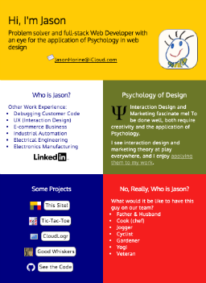

JasonHorine.com

The design of my site was inspired by the ATX Hack for Change site. I love their simple, geometric, mobile-first design. I also appreciated that it dared to ignore the white-space race and giant background photography that are so common among the popular templates. Its focus appears to be functionality. Its focus is the user.
I used no framework or template. The sizing of the blocks is accomplished using Flex and media queries.
My color choices:
- Gold and Green are from the US Army, where I first stepped into the Tech field. Army Yellow:FFCB05 Army Green:7B8738
- Navy is from the flag of Kentucky, where I grew up. Navy:000080
- Red is from the flag of Texas. My wife and daughter were born in Texas. They are back home, and I love it here. I also arranged the blocks so the blue red and white would be reminiscent of the Texas flag at wider screen widths. Red:F51E1E